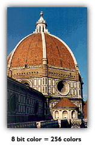
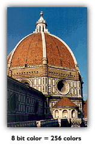

All color information in a bitmap is stored numerically. To a computer, numbers are
stored as a collection of 1's and 0's - also known as binary digits or bits.
One bit color only uses a 0 or a 1 to repesent each pixel on a screen. A bitmap
with a color depth of 1 bit can only be a pure black and white picture. 4
bit color allows for 16 different colors in the bitmap. (More bits = more
possible colors) 8 bit images will allow 256 colors, 16 bit gives over 65
thousand colors and 24 bits will allow 16.7 million colors! Most desktop computer
being produced today are capable of displaying 32 bit color images. They contain
pallettes of 4,294,967,296 possible colors. (Far greater than the eye can
discern.)
Of course, the greater the color depth the more storage space the picture
will take. It used to be that for most multimedia work that ended up on the
Internet 256 colors (8 bit) worked just fine. But as you can see in the examples
above, even 256 colors has a problem with gradients. (Look closely at the
sky.) But the greater color depth demands more storage space for each picture.
Compression schemes were invented to take all of the raw data in a picture
and squeeze it into a smaller package. The most popular compression schemes
on the Web today are GIF and JPEG.
GIF - Graphics Interchange Format
This is the most common graphic format on the Web. It can be used for stills or animated images. It can only show 256 colors (8 bit) but the images don't loose any color information in compression. (GIF's are "lossless.") They can make use of transparency (an alpha channel) to allow the background of the web page show through parts of the image. Because of the way they compress information, GIFs work best when large areas of color appear in the original image. It is possible to simulate more colors in a GIF by using dithering. Dithering places two color pixels (from the 256 possible) right next to each other so that they appear as a third color. (A red pixel right next to a blue pixel appears to the eye as purple.) Dithering sharply increases file size! GIF files can be interlaced - they will first appear in low resolution and then gradually appear in full resolution as they completely download.
JPEG - Joint Photographic Experts Group (JPG in Windows)
JPEG was developed primarily for photographic images, but it works well with all sorts of pictures. It uses 24 bit color so it supports millions of colors. It will not support transparency and is a "lossy" format. Lossy means that it will loose color information as it compresses the file from the original. It is possible to control how much is lost. Hard edges in a picture do not compress well in JPEG so it is also possible to set JPEG's smoothing effects. The more smoothing in a picture the smaller the file size. JPEG's can load progressively - the picture will load quickly at a low resolution and then gain detail as the download continues. Progressive loads are slightly different than an interlaced load, like those used in GIFs. Gradient colors, photographs or scanned images work best with JPEG.